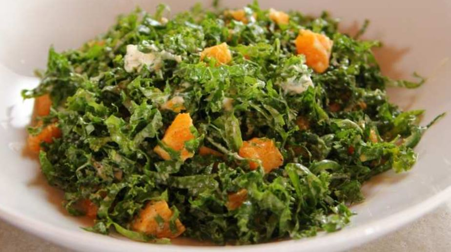

Salad

Kale Citrus Salad
Just eat
Ingredients
- 1 bunch kale, leaves torn off the stalks
- 1/4 cup orange juice
- 2 tablespoons olive oil
- 1 teaspoon sugar
- 1 clove garlic, pressed or grated
Salt and freshly ground black pepper
- 1 heaping tablespoon sour cream or plain Greek yogurt
- 3 tangerines, mandarins or clementines (or 1 orange), peeled and cut into chunks
- 1 jalapeno, seeded and sliced very thin
- 4 ounces goat cheese (chevre)
the steps needed for making the pizza
- Preheat oven to 400° and spray a baking sheet with cooking spray. Place mushrooms on baking sheet and toss with with oil, salt, and pepper. Bake for 10 minutes.
- Top mushrooms with pizza sauce then mozzarella and pepperoni. Sprinkle with oregano and red pepper flakes. Bake again until sauce is bubbly and cheese is melted, 10 minutes. Garnish with basil to serve.